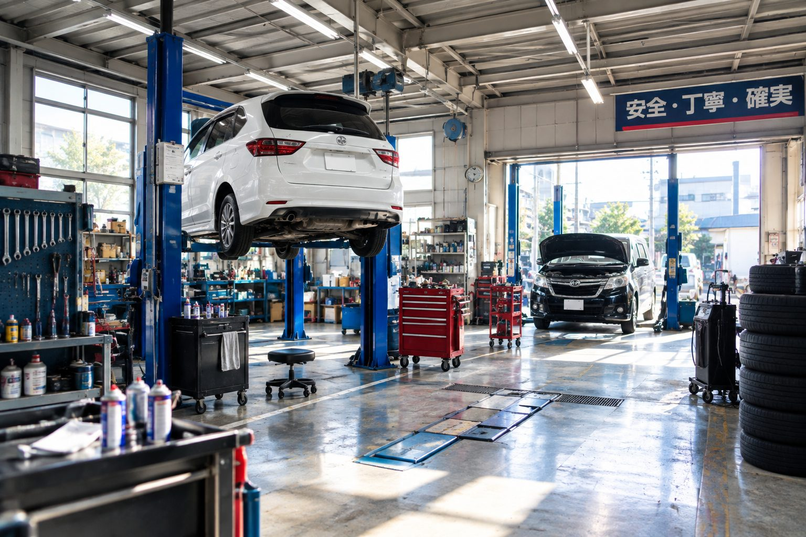
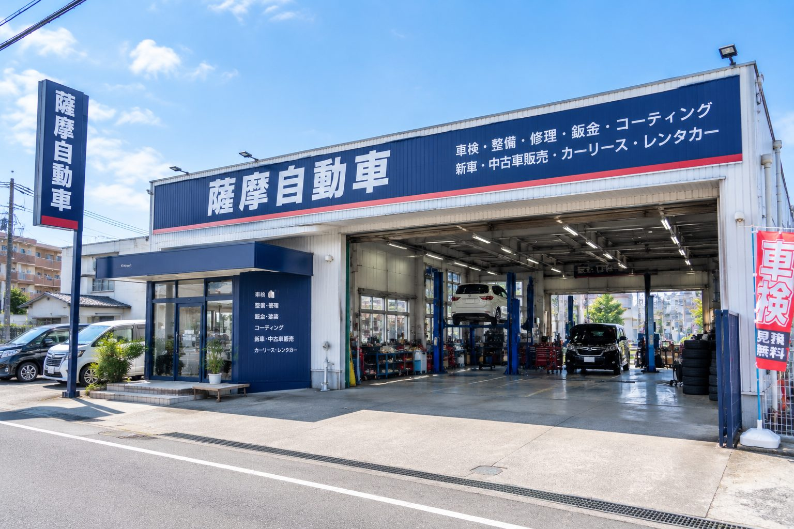
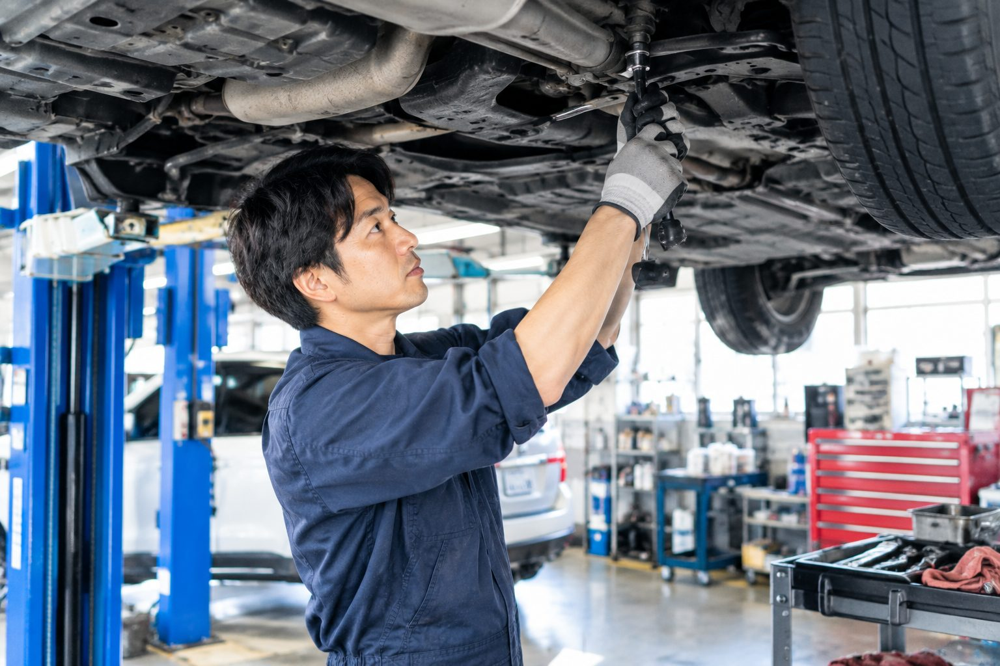
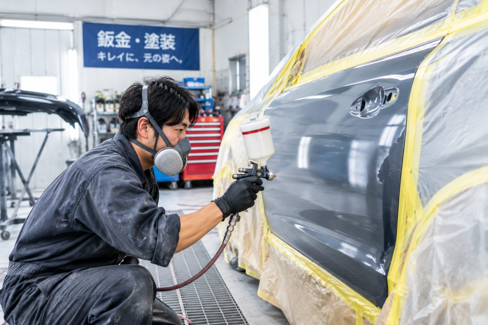
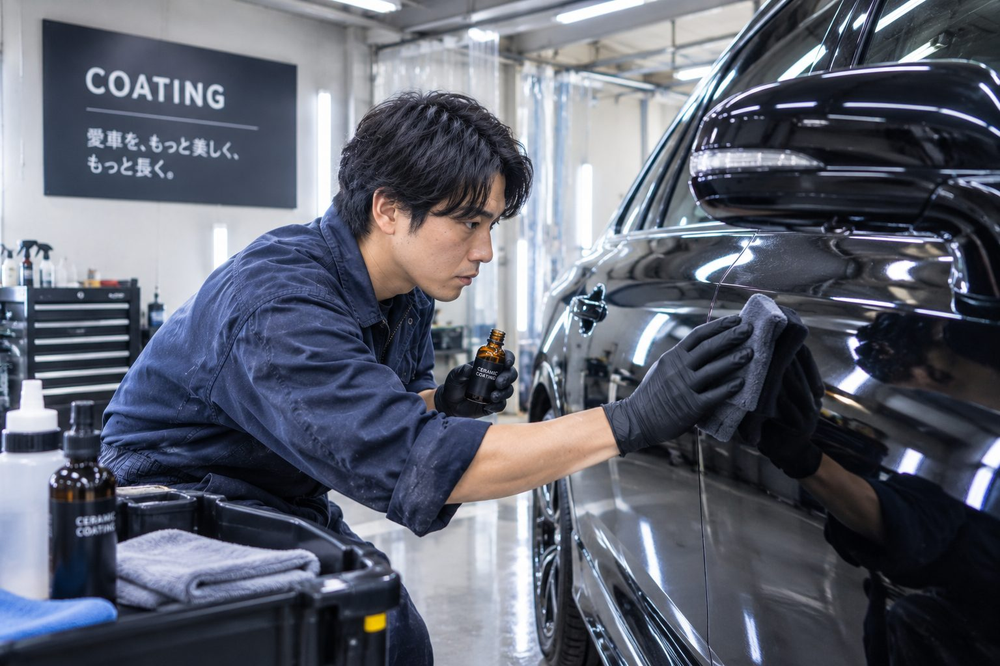

車検、どこに頼めばいいか分からない
車の専門知識がないと、整備工場選びそのものが不安になります。
車検・整備・修理から、
鈑金・塗装・コーティングまで。
お車の状態とご希望を伺い、必要なことを分かりやすくご提案します。
2026.09.16 公式サイトのお知らせ
現在、整備・修理・車検につきましては、新規のお客様からの受付を一時停止しております。受付状況や今後のご案内については、お知らせをご確認ください。 整備・修理・車検の新規受付は、公式のお知らせの内容に合わせてご案内しています。対応できる内容は時期によって変わります。最新の受付状況は、お知らせをご確認ください。
こんなとき
車の専門知識がないと、整備工場選びそのものが不安になります。
原因が分からないからこそ、まず相談したい。
本当に必要な整備なのか、きちんと説明してほしい。
価格だけでなく、信頼できるところにお願いしたい。
そんな「車の困った」を、薩摩自動車へ。

REASON
車のことは、専門知識がなければ分からないことがたくさんあります。だからこそ、お車の状態を確認し、必要な対応を分かりやすくお伝えすることを大切にしています。
01
お客様の状況を伺いながら、車の状態を確認します。言われた作業をするだけではなく、その車に合わせた対応を考えます。
02
公式サイトでも「必要な作業を明確にお伝えしてから対応する」と案内しています。何が起きているのか、何をする必要があるのかを、分かる言葉で伝えます。
03
車検、整備・修理、鈑金・塗装、コーティング、新車・中古車、下取り、廃車。車に関することを、この店でまとめて相談できます。
04
1975年、東淀川区豊里で自動車整備工場として始まりました。近畿運輸局長の認証工場であり、自動車特定整備事業の認証も受けています。
SERVICE
東淀川区豊里で、車検・整備・修理・鈑金・コーティング・中古車・廃車までご相談いただけます。料金はお車の状態を確認してからのお見積りです。お見積りは無料です。
車検と定期点検。国の認証を受けた整備士が点検・整備します。車検をご利用のお客様には、室内清掃と洗車が無料です。
故障修理と一般整備。タイヤ交換、パンク修理、オイル交換、ガラス交換なども案内しています。
気になるキズやへこみから、大きな損傷まで。お見積りは無料です。
紫外線で塗装が傷みやすい車を、長くきれいに乗りたい方へ。ボディーコーティングのご相談ができます。
新車・中古車の取り寄せに対応しています。使い方やご予算に合わせて、一台を一緒に探します。古物商許可 第1546号。
買い替えや、不要になった車の査定・下取り。廃車も無料です。お見積りは無料です。
整備するだけじゃない
車のことは、専門家でなければ分からないことがたくさんあります。
だからこそ薩摩自動車では、次のことを考えながら、お車と向き合います。
口コミでも、状態を確認したうえで対応を提案してもらえた、という声があります。車のことが分からなくても、安心して相談できる。それが、この店で大切にしていることです。
VOICE
確認できた口コミに繰り返し出てくるのは、丁寧な対応、状態の確認、分かりやすい提案、預けたときの安心です。
「気持ちの良い対応」
「親切、丁寧」
対応の丁寧さや、気持ちのよさを評価する声があります。
「真剣に色々点検」
「ベストな方法を考えて提案」
車の状態を確認したうえで、方法を提案している、という評価です。
「安心して車を預けられる」
「何かあるたび助けてもらっています」
預けられる安心と、何度も助けてもらっている、という声があります。価格については「良心的」という声もあります。
載せているのは、確認できた短い表現と、その傾向です。全文とお名前は載せていません。4.6と14件は調査時点のGoogleの表示で、その後変わることがあります。出典はGoogleの店舗ページです。

薩摩自動車について
薩摩自動車は、1975年5月7日、大阪市東淀川区豊里で自動車整備工場としてスタートしました。当時の豊里は住宅も少なく、修理、鈑金、車検、中古車販売と、車のことを一通り手がけてきました。
代表は福島准一。整備は、代表の長男が整備士として、従業員とともに支えています。代表メッセージには、お客さま第一で、必要とされるサービスを続けていきたい、と書かれています。
近畿運輸局長認証の工場（認証番号 7586A）です。自動車特定整備事業の認証を取得し、自動車整備振興会の会員工場でもあります。電子制御を含む整備まで、認証を受けた範囲で対応しています。
定休日は、公式サイトの店舗概要と各ページの案内をまとめたものです。月ごとの休業はお知らせをご確認ください。
WORKS
点検、説明、工場、鈑金、コーティングの提案用イメージです。薩摩自動車の施工事例ではありません。



FAQ
2026年9月16日の公式サイトのお知らせでは、整備・修理・車検の新規受付を一時停止しています。最新の案内は、ページ上部と公式のお知らせでご確認ください。 整備・修理・車検の新規受付は、公式のお知らせの内容に合わせてご案内しています。ページ上部と公式のお知らせをご確認ください。 受付状況は時期によって変わります。最新の案内は、公式サイトのお知らせをご確認ください。
公式サイトでは、車検、整備・修理、鈑金・塗装、コーティング、新車・中古車、下取り・廃車、代車、レンタカー、カーリース、自賠責保険、登録手続き、カー用品を案内しています。整備・修理・車検の新規受付については、ページ上部の案内をご確認ください。
公式サイトでは、お見積りは無料と案内しています。鈑金・塗装や下取りも、お見積りは無料です。料金そのものは、お車の状態を確認してからのご案内です。
公式サイトでは、代車11台を無料（ガソリン代は別）と案内しています。台数や条件は変わることがあるため、利用できるかはお電話でご確認ください。
修理は案内しているサービスです。ただし、新規の整備・修理・車検は、2026年9月16日の告知時点で一時停止しています。 修理は案内しているサービスです。新規で受けられるかは、ページ上部の案内をご確認ください。 修理は案内しているサービスです。内容は、お車の状態を確認してからのご案内です。
〒533-0013 大阪府大阪市東淀川区豊里1丁目5-31です。電話は06-6327-6164。営業時間は9:00〜18:00で、12:00〜13:00はお昼休憩です。定休日は日曜・祝日、第2・第4土曜日、お盆、年末年始、GWです。月ごとの休業は公式サイトのお知らせをご確認ください。
アクセス
薩摩自動車
〒533-0013
大阪府大阪市東淀川区豊里1丁目5-31
TEL 06-6327-6164
FAX 06-6327-6463
営業時間 9:00〜18:00
12:00〜13:00はスタッフ全員がお昼休憩です。
定休日 日曜・祝日、第2・第4土曜日、お盆、年末年始、GW
新規の整備・修理・車検は、いま一時停止しています。受付状況をご確認のうえ、お電話ください。公式LINEでもご連絡いただけます。返信までお時間をいただくことがあります。 ご相談の内容によって、受付できる場合があります。受付状況をご確認のうえ、お電話ください。公式LINEでもご連絡いただけます。 「これって修理が必要？」「どこに相談すればいい？」そんな車のお悩みから、ご相談ください。